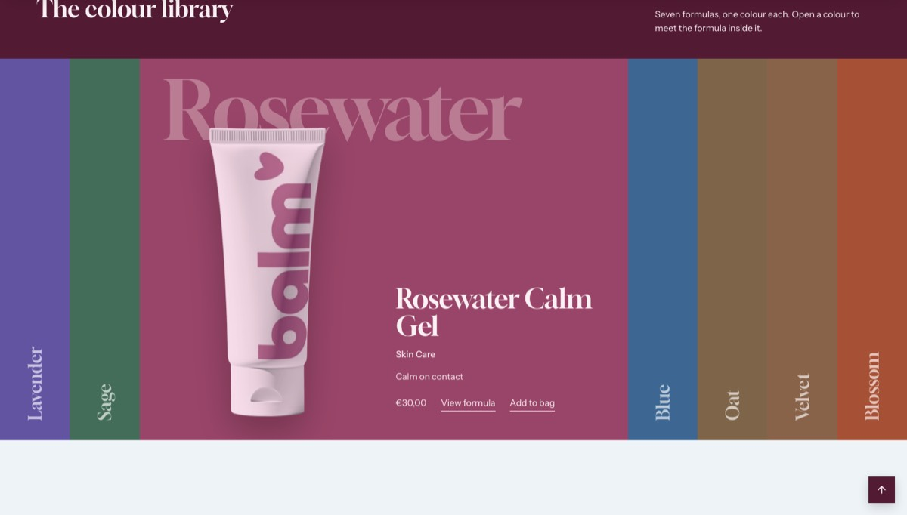
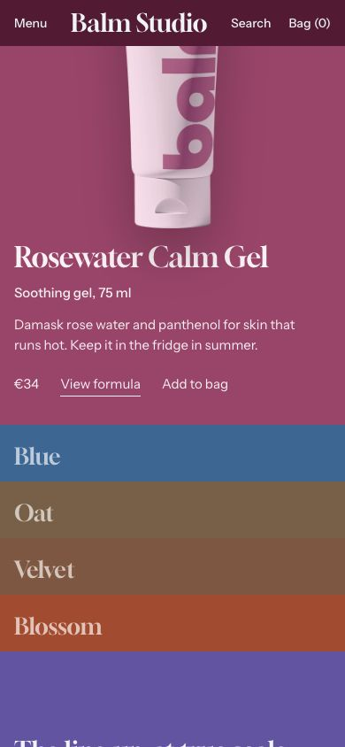

Color library
The whole range at a glance: one tall band per product, each in its color.
WhereAny template. Not available in the header or footer group.


What it is for
Let visitors browse by color. Each band carries a product name written upright; opening it shows the product, its text and the buttons to buy it.
How it works
Pick up to 12 products in Products, or a Collection, whose first 12 products are used when no product is picked; with neither, the first 12 products of your store. Opening a band, on hover, on click or with the keyboard, widens it, shows the product upright with its name, type, tagline, price, View formula and Add to bag, and gives the section and the page that product's color. Band open at start chooses the band open first. On phones the bands stack as an accordion. Without JavaScript each band opens and closes on its own.
Content tips
- Give every product its two colors: without them, each product takes a color of its own derived from the house pair.
- The large word of the open band is the first word of the name, or its first line: Number of lines shows up to four lines, and Default layering can bring them in front of the product. See The large name.
- Order the products from light to dark, or by family: the row of colors is the first thing seen.
Settings
Section settings (17)
| Setting | Values | Default | Notes |
|---|---|---|---|
| Heading | Text | Explore by color | |
| Text | Text | Describe the collection in one line. | |
| Products | Product list | Empty | Up to 12. Each band takes its product's colors: custom.background_color and custom.background_color_end. |
| Collection | Collection | Empty | Used when no product is chosen above: its first 12 products. |
| Band open at start | 1 to 12 | 1 | |
| Show price | Checkbox | On | |
| Show add to cart button | Checkbox | On | |
| Anchor | Text | Empty | Lowercase words joined by hyphens. Link to this section with #anchor, for example from a menu. |
| Band height (desktop) | 40 to 100 svh, step 2 | 74 svh | |
| Open band height (mobile) | 40 to 100 svh, step 2 | 86 svh | |
| Top padding (desktop) | 0 to 200 px, step 4 | 120 px | |
| Top padding (mobile) | 0 to 200 px, step 4 | 80 px | |
| Product name | |||
| Number of lines |
| Auto | Auto: the first word of the name, or its first line from custom.name_lines. 1 to 4: up to that many lines. |
| Default layering |
| Behind the product | Which lines of the name stand in front of the product. The others stay behind it. |
| Opacity of lines in front | 40 to 100%, step 5 | 100% | Lower it to let the product show through the lines in front. |
| Name size |
| Fixed | Fixed follows the screen. Auto sizes the longest line to most of the width. Lines never run off the screen or under the header. |
| Scale | 60 to 130%, step 5 | 100% | |